Falling Back to Earth
A follow-up
It's been an incredible journey over the last month. Somewhere over either Vietnam or the South China Sea I was ambushed with the irony of flying halfway around the world just to move again a few days later. I couldn't, and still can't believe that this is finally happening. This is something that I couldn't do until now.
The sweltering heat is only one of the things you leave behind when traveling roughly 14,000 kilometers from Bangkok to Boston. After a couple days you learn to appreciate any air-conditioned havens you discover. Gone too is the maddening traffic, inhale-able pollution, and 3AM roadside $1 noodles with intense (and loud) philosophical debates sprinkled in (seriously though, why isn't this a thing in the states?)
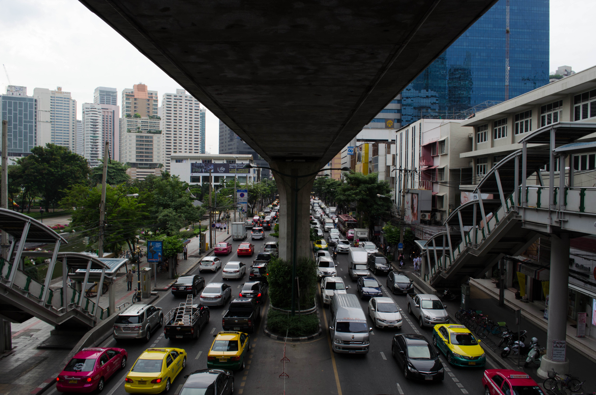 > this doesn't even count as rush hour
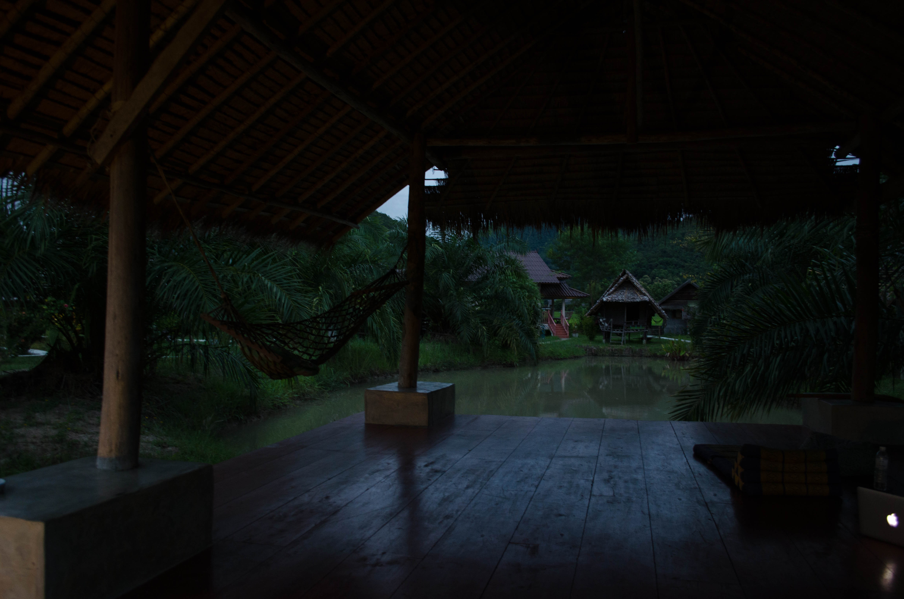 > some R&R in the middle of a rice paddy
My eyes were a little on the watery side that morning, I had to catch a 4AM taxi after all. I tried fitting a lot into the 3.5 weeks I was on the road, since I had left the conventional 9-5. I have no regrets about getting this show on the road and seeing where it leads in the coming months. I've learned over the last few years that it takes a much longer time for me to open up to people, even people that I've known for many moons. This will always be something that I need to work on and is one of the things that I've tried to break free of while traveling far away from home.
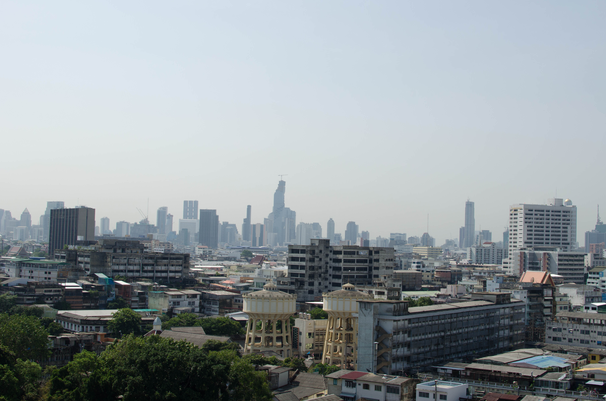 > Bangkok on a clear day
I've met so many people and new friends whether it be other weary travelers, locals, expats just over the last month (more than the combined last 4 years of my life) and as cliché as it sounds I'm so happy that I was able to spend time and experience new things together. It's unfortunate I had to go home so early and say goodbye to so many new friends.
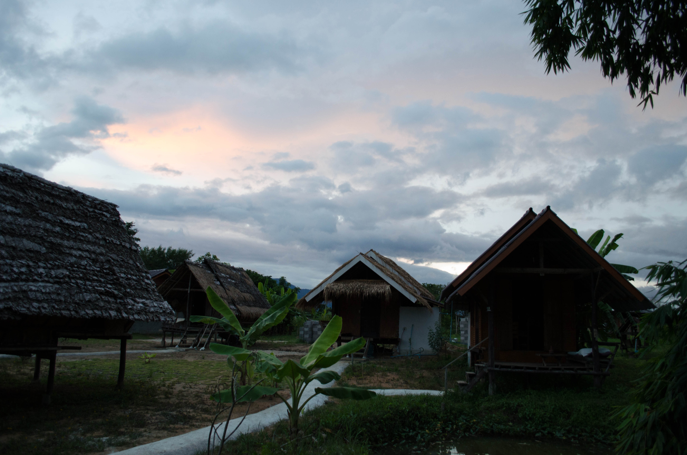 > Ing Doi / the Yawning Fields just outside of Pai. Ask Mink (the owner) for the red curry for every meal. Get used to geckos though.
Not too long, one of my good friends from college introduced me to the personality types. It's been something that has mystified (and haunted) me over the last year especially how eerily accurate it can be sometimes. One guy I met on a bus to a ferry to get down to Koh Pha Ngan was particularly interested in the human psyche and was convinced that I was inherently extroverted based on the fact that we were talking the entire extent of the bus ride. I won't reveal what I've tested as because I don't believe that the four letters you get back envelops you as a person, it's important to remember that you can decide who you are as a person. I'll admit that I've been afraid of falling, of failure and rejection and I've tried to protect myself for too long now. But that's ok, everyone moves at their own pace. And everything is going to end up just fine.
The decision to flee Boston was borderline desperate as a grandiose and maybe even gonzo plan of stepping into the nether. I still don't know how the next few months will end up turning out but if there's only one takeaway that I'll bring back to the states it's that I'll figure out a way to survive. I'm not worried about what comes next, but I sure am looking forward to it.
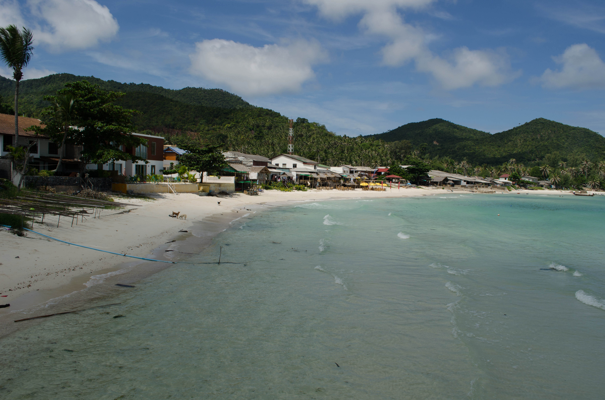 > Chalok Lam, northernmost fishing village on Koh Pha Ngan. I hiked up here 3.5 miles with my 40L along the shore and through rolling hills in the hopes that a taxi boat would take me to a secluded beach unreachable by conventional road vehicles. The taxis only leave if the boats full - otherwise they rip you off for 200baht (it's the principle that gets to me, not the dollar amount) had to hike back down. The sand here was the best I found on the island though.
Getting to some of the remote parts of the region, off the beaten path, was one of the (many) highlights. Bangkok's a great city - one of my absolute favorites out of all of the ones I've passed through in my years of traveling. There's a reason why it's a cosmopolitan gem. It's one of those cities that you namedrop anywhere in the world, and people know about it; this is akin to first name athletes like Lebron, Peyton, Pedro, Roger, etc. you don't even need to name the last name, you just know. Once you get off the beaten path, you don't feel obliged to stick to the traditional guidebooks because there's so many more periods of not knowing. There's also a lot less expectations and more freedom to pace yourself to say the least.
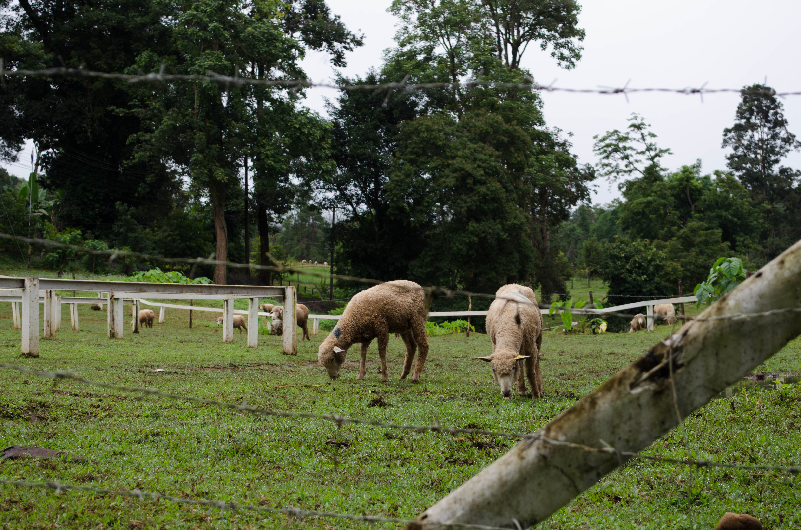 > I found myself standing in the middle of an alpaca farm / botanical garden in Mae Hong Son province when I was looking for the Thai-Burmese border. (you sort of head north until the road stops being road and yeah, I know they're just sheep - alpaca sounds more exotic)
Similarly, Cambodia, though a hugely popular destination almost entirely because of Angkor, is another huge culture shock (but Thailand eases you into it). I wasn't even planning on making it to Cambodia halfway through but I decided to buy tickets on a night train from Surat Thani to Bangkok off of a tethered iPhone connection because I wasn't sure the next time that I'd be in the area.
I'm pretty sure it's firmly ingrained into Khmer culture to politely badger people - you always have to keep smiling though. It's an asian concept to "keep face". It's also nicknamed Scambodia for a reason. Tourist vs local prices, variations on the gem scam, creative stretching of the begging concept abound, and tipping immigration agents at the border (seriously this is considered normal practice - you just start handing over small bills until they guy starts smiling). I encountered no less than 3 school-kids lurking in a 200 meter swath of jungles around the temples of Siem Reap looking for a little money here and there. It's a well rehearsed dialogue.
- They'll ask you where you're from.
- "Oh, USA? Capital: Washington DC, President: Barack Obama, Population: 300 million"
- Then they'll ask you for a donation for their school on a pledge form filled with a bunch of generic names "Tim Smith" - $1000, etc.
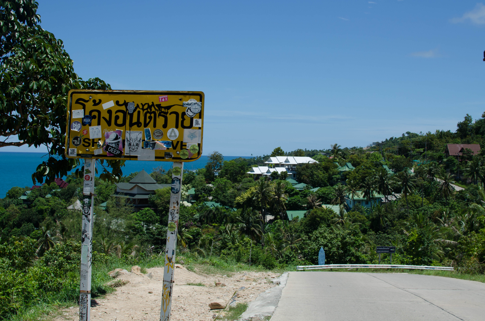 > The road from Thong Sala to Haad Yao
Added on top, the infrastructure there can't keep up with the number of tourists passing through (and sometimes it seems on purpose). The hostel that we stayed at lost power no less than 4 times, though some of that was due to the construction crew (more like a mob) that was inexplicably digging up the side of the road only to fill it up again with more dirt. There's nothing to complain about though (not like I was carrying bricks of ice around in my gear) get 50 cent beer in the candlelit hostel bar was probably just as fun as getting it in conventional lighting. I've only been in a powerless bar once before (it was during a power outage in Boston - Yeah I don't get out much).
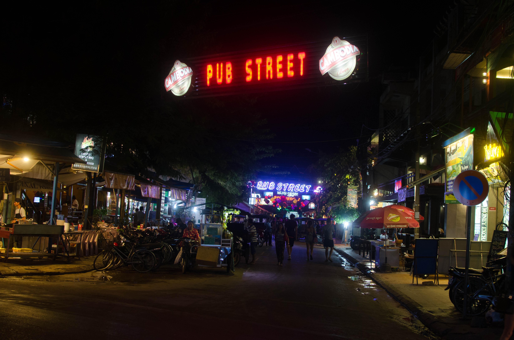 > Get ready for touts. Just smile and shake your head.
Despite how pestering they can be, interacting with smiling Khmer are a real treat. After a rainstorm almost seems like small Khmer children will spawn out of the walls of popular temples to swarm and try to sell you cheap plastic raincoats. Now, I've never had dreams of fighting packs of midgets, but I suppose if you have that fantasy this would be the place to go (not that I condone violence to kids/anyone). If you can look a little further than the school-age girls in the covered markets begging you to buy magnets and t-shirt in addition to the tuk-tuk lined streets where every driver asks "hey where you going?" or "you want tuk-tuk?", and trust me it gets tired and annoying fast, people can still be beautiful.
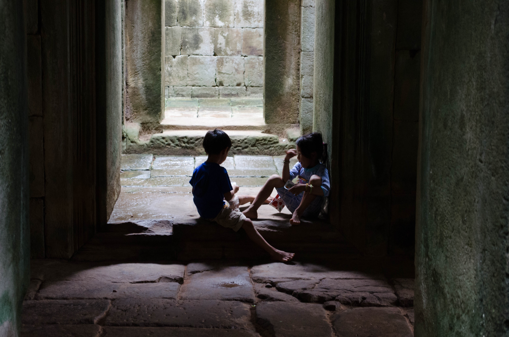 > Just waiting for afternoon storm clouds to roll in @ Angkor Wat
Originally I had intended to visit Angkor on a bike, at my own pace. When I stepped out of the airport in Siem Reap I hired a motorcycle taxi to bring me into town (quite an experience). Along the way, Rith, my Khmer driver (more like biker) who spoke excellent English explained that he's actually a farmer from several hours outside of Siem Reap and that due to heavy flooding he was working as a driver to support his family of 10. He told me he wanted to be my driver. Look, I'm well aware that people in desperate situations will say whatever they need to say, and stories like these can be tailor-made. The fact of the matter is that they're not looking to scam you out of your life savings. I'd already spent nearly a thousand USD to get to there on the flight alone - another few dollars will mean a whole lot more to locals than it will for me. And after that, if you end up hiring your driver - they'll be your best friend for the rest of the day (yeah, just realized I pretty much just described how to buy friends).
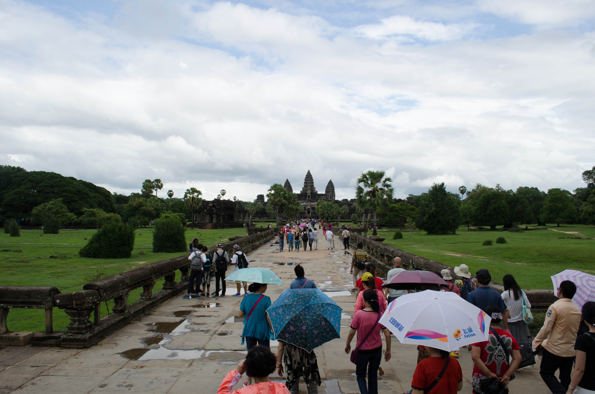 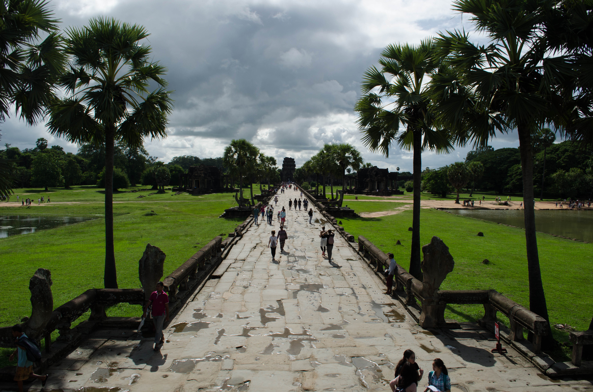 > The only thing that dwarfs the number and size of the temples within Angkor are the crowds. Go right after it rains.
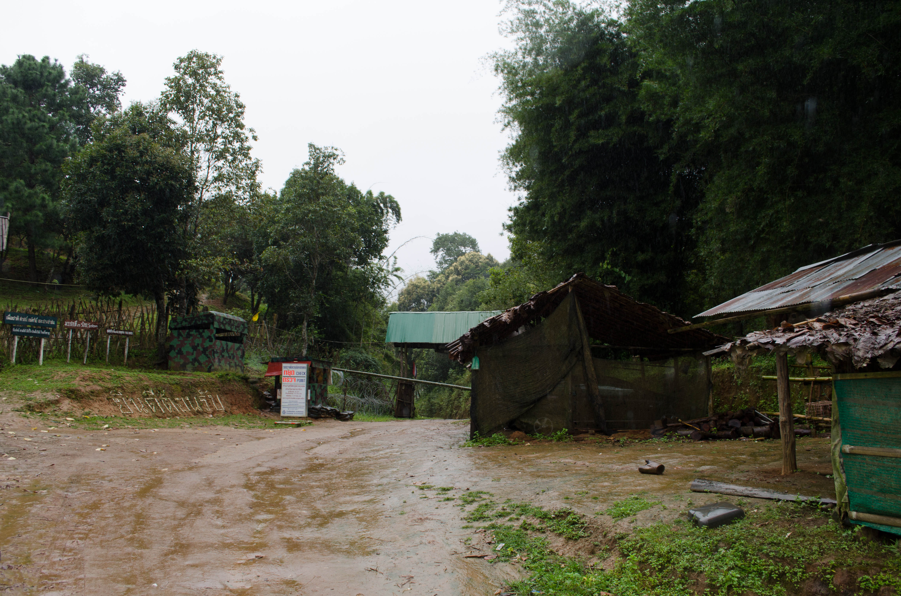 > Checkpoint on the border of Thailand and Burma, on the outskirts of Ban Raak Thai (Mae Aw). Doesn't seem like they issue visas here. You could pretty much walk across (or climb over the mountains if particularly adventurous). I didn't feel like getting arrested that day.
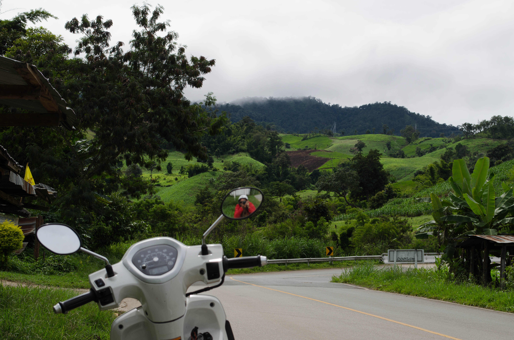 > Somewhere between Pangmapha and Pai
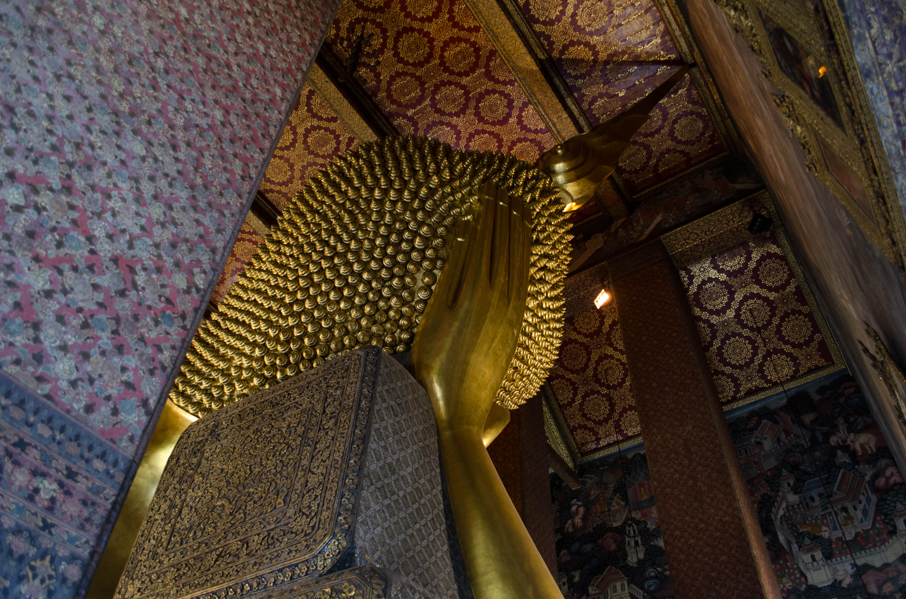 > The Reclining Buddha in Wat Pho. Back shot because I'm awkward like that.
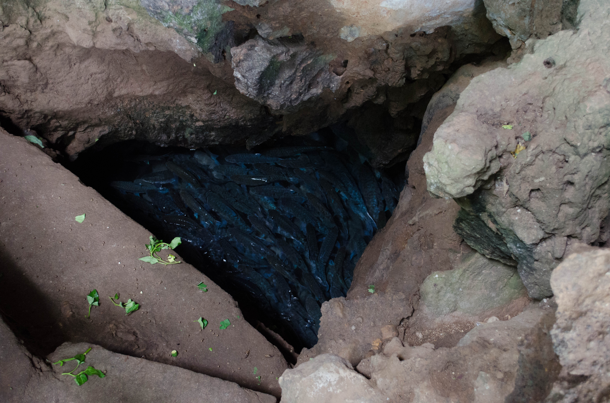 > Fish Cave (Tham Pla) it's more like Fish Hole. Hundreds (if not thousands) of delicious carp line up to get into an underwater cave leading into a mountain. Very few appear to be leaving.
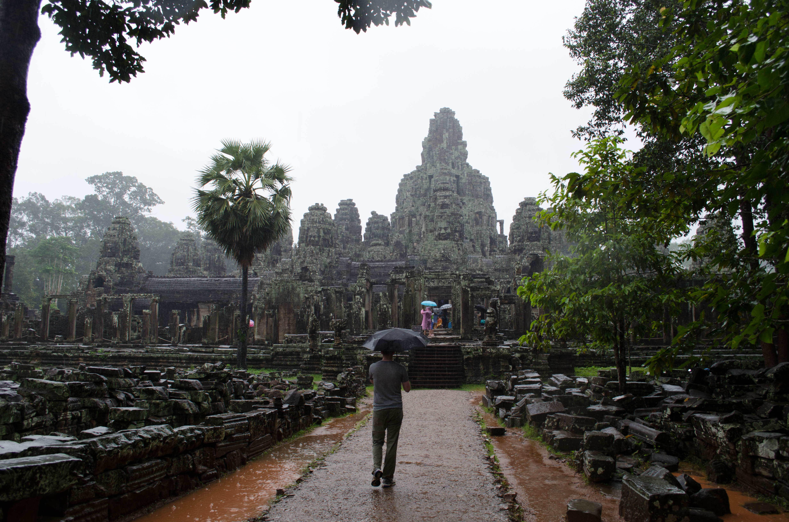 > the Bayon, the King as Buddha
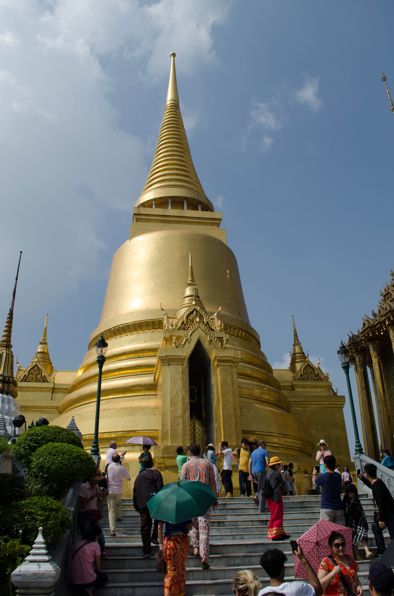
> Golden Pagoda in the Grand Palace of Bangkok. Mobs of Chinese Tourists in their finest form
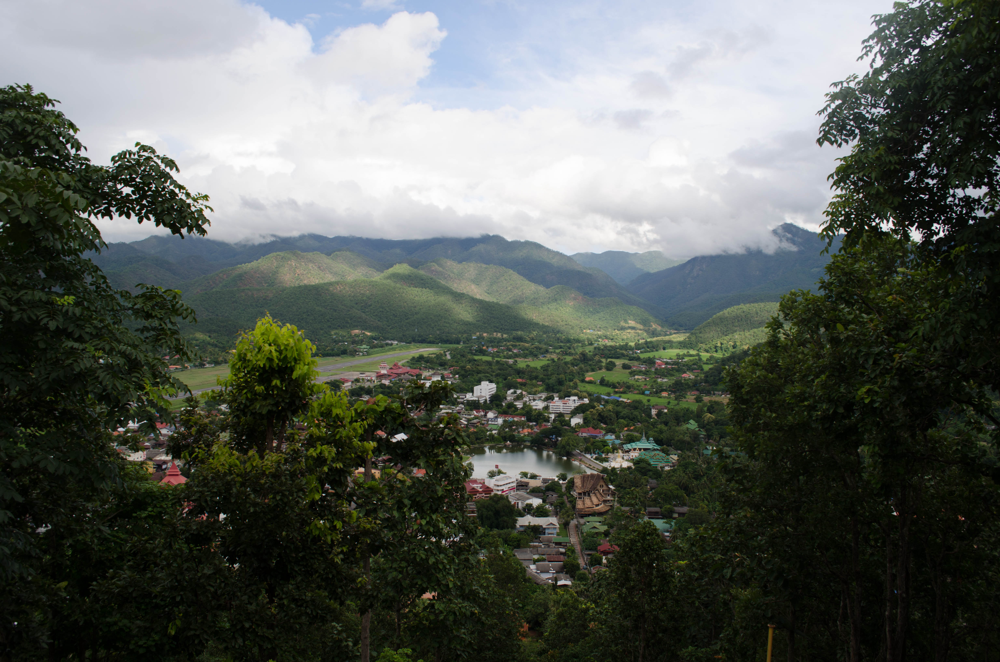
> Mae Hong Son City, quintessential northern Thai town.
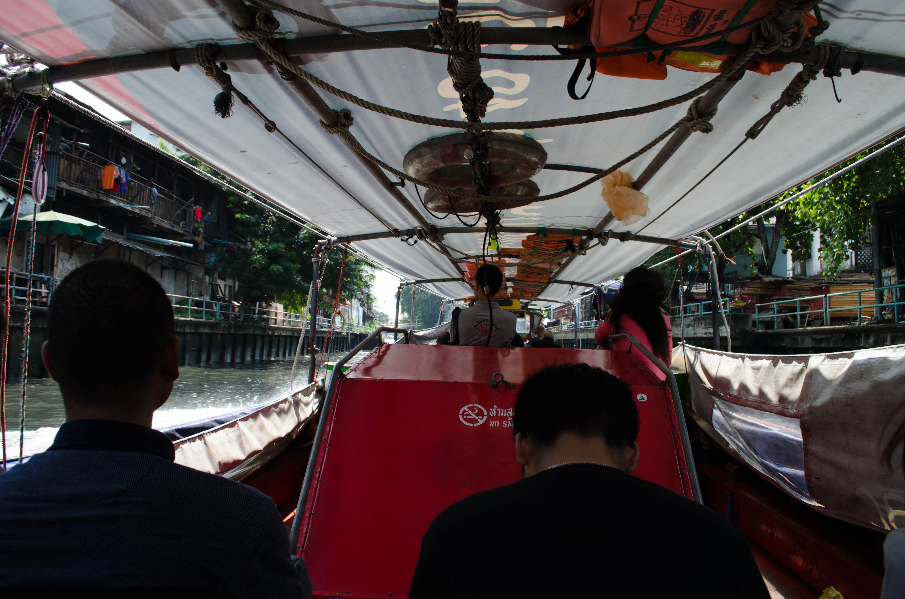 > 8 baht boats in canals with dead cats floating around the surface? Must be in Bangkok!
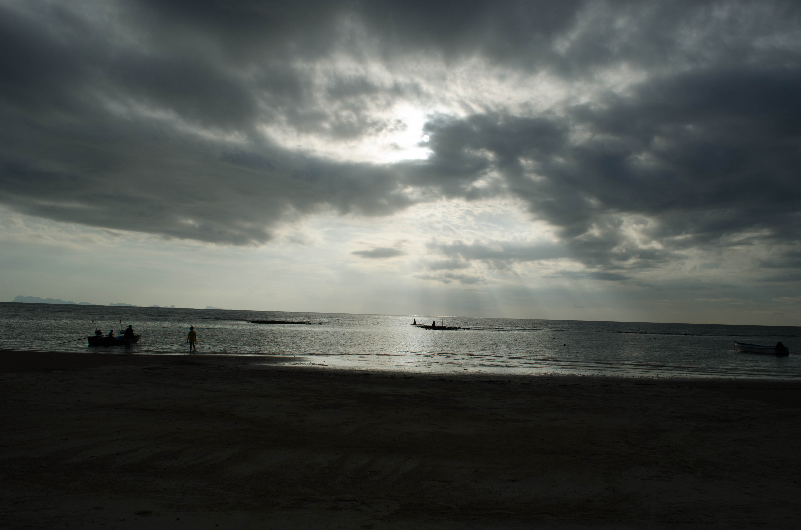 > Haad Yao. Seriously just get a bike in KP though. It's worth it and your passport won't go anywhere. (All shops on KP require it as deposit - for good reason)
I don't really have a point that I'm getting to but thanks so much for reading. The memories are too many to list (and most of what happens in Bangkok needs to stay in Bangkok anyways). I'll always remember Ting Tong and how he drove us around at least 6 times all the while with too many people crammed into the back seat passing around an awful bottle of Thai whiskey. Not sure if I can ever look at birthday cards in the same way though ;)
Bring it on New York, I'm ready. I've had pizza on the other side of the world - let's see what the fuss is about.
To friends new and old, sayonara, sawadee, I guess I'll see you around.